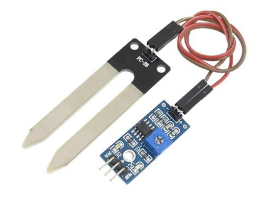
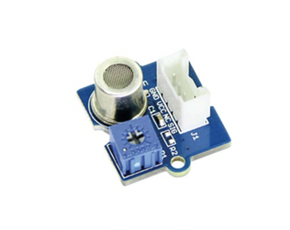
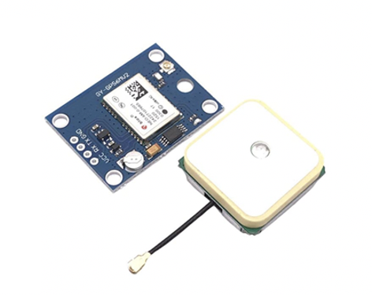

In dit onderdeel van het portfolio van Kai Kroon zal er verder ingegaan worden op het vak Smart Technology. Hier zullen onder andere de week opdrachten, de competenties en mijn ervaringen binnen dit vak besproken worden.
Veel leesplezier!
Extra paginas
Video werkende plant water systeem
In deze video ziet u de stappen die ik als persoon gemaakt heb tijdens het vak Smart Technology. Eerst zal de werking van de verschillende sensoren te zien zijn, hierna zal het ontwerpen van de printplaat getoond worden en tot slot het werkende eindproduct.
Heel veel kijk plezier!
Competenties Smart technology
Hier vind u de competenties van Smart technology voor de gehele werking van het planten water systeem bekijk de video onder de opdrachten>
Plaatst de casus in een business context
Wij hebben de technieken en sensoren die we tijdens de smart technologie lessen hebben gebruikt en geleerd verder mogen toepassen op ons project. Wij zijn de afgelopen periode bezig geweest met een project voor Smartty, dit is een bedrijf die units ontwikkelt die de lucht zuivert doormiddel van planten. Deze units moeten natuurlijk voorzien worden van sensoren die verschillen aspecten kunnen meten. Zo gebruiken de units een deel van dezelfde sensoren als ons planten watersysteem.
De DHR-sensor wordt bijvoorbeeld gebruikt om de temperatuur en vochtigheid in de ruimte van de unit te meten. Ook is er gebruikt gemaakt van een LDR om het aantal lichturen op een dag te meten. Naast de LDR is er ook Soil Moisture sensor gebruikt om de vochtigheid van de grond van de plant te meten. Ook zal er een water pomp in de unit komen, echter dient deze wel een stuk groter te zijn en aan te gaan wanneer de Soil Moisturen sensor onder een bepaalde waarden komt.

Naast deze sensoren die gebruikt zijn in het plantenwater systeem hebben we nog extra sensoren toegevoegd aan ons advies. Zo hebben bij aangeraden om een Co2, Fijnstof en Formaldehyde meter toe te voegen in de ruimte van de unit. Dit zijn belangrijkste factoren die voor de kwaliteit van de lucht zorgen. Naast deze sensoren zouden we ook een gps-sensor toevoegen aan de unit, dit is handig wanneer de unit op in een groot gebouw staat en deze water nodig heeft. Doormiddel van deze GPS weet diegene dan waar de unit zich bevindt. Tot slot zal er een sensor in her waterreservoir geplaatst moeten worden die de hoeveelheid water meet die in de unit zit, hierdoor weet de desbetreffend persoon op tijd wanneer de unit bijgevuld dient te worden.
Naast deze sensoren zal er eventueel een lamp toegevoegd kunnen worden die ervoor zorgt dat de lamp wanneer nodig extra licht krijgt. Dit kan in samenwerking gaan met de LDR, wanneer de LDR bijvoorbeeld meet dat de plant onder de 4 uur licht per dag zit dan springen de lampen aan en geven deze de planten unit het benodigde extra licht.


Ik heb het vak Smart technologie heel leuk maar ook zeker leerzaam ervaren. Alles wat we hier gedaan hebben was compleet nieuw voor mijn, dus vond ik het ook zeer interessant om hiermee aan de slag te gaan. Ik vond het leuk dat het vak ook uit verschillende delen bestond zoals het programmeren van alle sensoren in Visual studio code, het ontwerpen van je eigen unieke printplaat en het ontwerpen van een case voor het plant watersysteem doormiddel van 3D printen. Helaas kon dit laatste deel door Covid-19 niet doorgaan. Wel is dit goed opgevangen om toch de technologie achter 3D printen te leren.
Ik ben zeer tevreden met het resultaat wat ik heb neergezet en dat de het hele systeem naar behoren werkt ben ik ook heel blij. Ook was het leuk dat wij de dingen die we geleerd hebben bij dit vak ook konden toepassen bij ons project voor de Smartty Planten units.
Ik wil jullie heel erg bedanken voor deze interactieve lessen en het leren werken met verschillende sensoren.